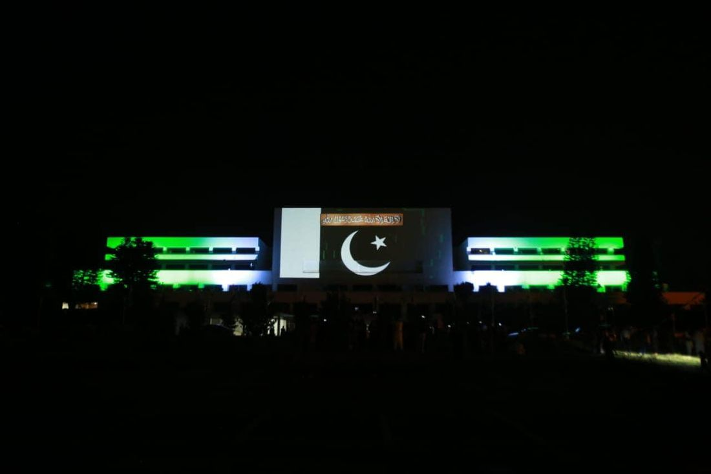

Choosing projector lenses and throw ratios for mapping
How throw ratio, lens shift and zoom decide where projectors can stand, with a lens selection checklist for facade projection mapping shows.

A projector can only fill a facade if the lens in front of it matches the distance to the wall. Pick the wrong lens and the picture is too small, spills past the building, or forces the projector into a position that is awkward to rig, guard or power. Lens choice is one of the first technical decisions we make on a mapping project at AKS, and it is often the one that quietly decides how many projectors a show needs. This note explains throw ratio in plain terms, how lens shift and zoom behave, and what to ask your studio.
What throw ratio actually tells you
Throw ratio is the distance from the projector to the surface divided by the width of the image it produces. A lens with a throw ratio of 2.0:1 gives an image 10 metres wide from 20 metres away. A lens at 1.0:1 gives the same 10 metre image from 10 metres. A lower number means a wider image from a shorter distance, and a higher number means a narrower image from a longer distance.
Most lenses are not fixed. A zoom lens is described by a range, for example 1.5 to 2.4:1, and the image width can be adjusted between the two ends. Fixed lenses exist for special cases, but zoom lenses give the team room to adjust on site when the real distance differs from the survey by a metre or two.
Two cautions apply. First, the figure is calculated against the projected image, not the building. If a facade is 30 metres wide but the content only needs 24 metres of it, the image width we need is the 24. Second, manufacturers quote throw ratios for a specific lens and a specific projector aspect ratio, so we always check the published range for the exact model rather than relying on a generic number.
Start from the survey, not the catalogue
We choose lenses after the building survey, because the survey gives us the things a lens depends on: the realistic positions for projectors, the distance from each position to the wall, and the width and height of the area to be covered. A catalogue cannot tell us that the only flat, safe, powered spot in front of a building is 35 metres back behind a line of trees.
From the survey we draw the usable positions, and then calculate the lens range each one needs. Where several positions work, we prefer the one that leaves the throw ratio in the middle of the lens range. That keeps the projector away from the extreme ends of its zoom, where small errors in distance matter most and where image quality and brightness can be least forgiving. We confirm these choices in the previsualization, so the position and lens are tested virtually before a projector is rigged.
Lens shift lets the projector sit where the building allows
Lens shift moves the image up, down or sideways without tilting the projector. This matters because tilting a projector causes keystone distortion, and although software can correct it, correction costs resolution and sharpness. On a facade, projectors are often on the ground, on a platform or on a low scaffold, while the area to be mapped starts above head height. Vertical lens shift lets the image rise to the surface while the projector body stays level.
Shift ranges are limited, and they are usually quoted as a percentage of the image height or width. They also vary between lenses on the same projector. So we check the shift range for the chosen lens, not only for the projector body. In many cases the right answer is a longer lens with more useful shift, rather than moving the projector.
Shift is also not free of side effects. At the limits of its range, the image can lose some sharpness at the edges or show slight colour fringing. We aim to stay comfortably inside the range and not at its edge.
Short, standard and long lenses compared
As a general guide, lenses fall into three practical groups. The exact ranges depend on the manufacturer, so treat the descriptions below as directions and not specifications.
| Lens type | Typical use | Watch for |
|---|---|---|
| Short throw or wide | Close positions, small plazas, interiors, tall narrow surfaces seen from nearby | Steep angles to the wall, geometric distortion and uneven focus across the image |
| Standard zoom | The common choice for facades with a mid-distance position | Brightness at the long end of the zoom, and the need for a margin in distance |
| Long throw or tele | Large open spaces, monuments seen from far back, positions behind a barrier | Cost, lens weight, a narrow image per projector, and sensitivity to vibration |
Brightness, distance and the lens
A lens is not only a framing tool. It affects how much light reaches the wall. A longer throw spreads the same light over the same area only if the image is kept the same size, and in practice longer lenses and higher zoom positions often pass less light than a wide, fast lens. Published lumen figures are normally measured under specific conditions, which can include the widest lens position, so the number on the data sheet is not guaranteed at the zoom setting a given building needs.
This is why we treat lens choice and projector brightness together. When a position is far from the wall, we check both whether the lens can frame the image and whether the result will be bright enough for the surface and the ambient light around it. Sometimes the best fix is not a brighter projector but a nearer position, or a second projector at a shorter distance. Wall material changes the answer too, as we describe in our note on how wall material affects projection mapping.
Angle, focus and resolution across the wall
Projectors focus on a plane. If the wall is flat and square to the projector, the whole image can be sharp. If the angle to the wall is steep, one side is closer than the other, and a single focus setting cannot make both sides crisp. Lens depth of field helps at longer distances, but it does not remove the problem. For a long, shallow-angle facade, we often split the surface between several projectors, each with a more direct view of its section.
Lens choice also sets the pixel density on the wall. The same projector resolution stretched across a wide image gives larger pixels than the same resolution across a narrow one. When the audience is close, that matters; when they are far away, it matters much less. The wider planning questions are covered in our guide to canvas resolution, and the overlap between neighbouring images is handled by edge blending, which also depends on each lens producing a predictable image size.
Practical steps we follow
- Measure the real distance from each candidate position to the wall, along the projector axis, not just the distance along the ground.
- Calculate the image width needed for each projector, including the overlap for blending and a small margin around the area.
- Divide distance by width to find the throw ratio, then choose a lens whose range holds that figure near the middle.
- Check the vertical and horizontal lens shift range for that lens and that projector.
- Check brightness at the zoom position the show needs, not only the headline figure.
- Confirm the position in previsualization and keep a spare lens or a second option for the same position where the budget allows.
- Record the lens model, zoom and shift settings for each projector after alignment, so a replaced unit can be matched quickly.
What to ask your studio
You do not need to choose a lens yourself, but a few questions help you judge a proposal. Ask where each projector will sit and how far it is from the wall. Ask which lenses are planned and how much margin they leave if the position moves. Ask whether the brightness has been checked at the planned zoom setting. And ask what happens if the permitted position changes, for example if an authority or the venue moves the equipment area. A studio that has done the lens calculation will answer without difficulty, and the answers feed directly into the budget in our quote preparation guide.
From Parliament House in Islamabad to Rohtas Fort, every surface we map starts with the same question of where projectors can safely stand, and the lens plan follows from the answer. If you have a building in mind, send us the location, the date and a few photographs through the contact section, and we will tell you what the throw distances and lens options look like.
Have a facade and want to know what it needs?
Tell AKS Creative Studio the venue, the likely projector positions and the date, and we will outline the lens and projector plan.
Start a conversation ↗